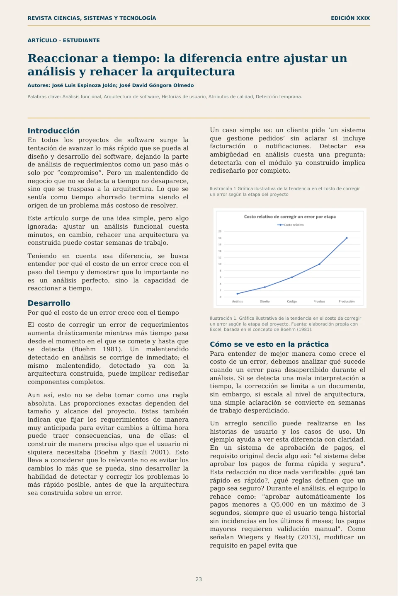
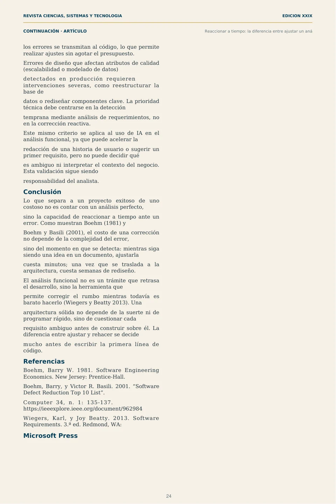

Reaccionar a tiempo
Introducción En todos los proyectos de software surge la tentación de avanzar lo más rápido que se pueda al diseño y desarrollo del software, dejando la parte de análisis de requerimientos como un paso más o solo por “compromiso”. Pero un malentendido de negocio que no se detecta a tiempo no desaparece, sino que se traspasa a la arquitectura. Lo que se sentía como tiempo ahorrado termina siendo el origen de un problema más costoso de resolver.
Este artículo surge de una idea simple, pero algo ignorada: ajustar un análisis funcional cuesta minutos, en cambio, rehacer una arquitectura ya construida puede costar semanas de trabajo.
Teniendo en cuenta esa diferencia, se busca entender por qué el costo de un error crece con el paso del tiempo y demostrar que lo importante no es un análisis perfecto, sino la capacidad de reaccionar a tiempo.
Desarrollo Por qué el costo de un error crece con el tiempo
El costo de corregir un error de requerimientos aumenta drásticamente mientras más tiempo pasa desde el momento en el que se comete y hasta que se detecta (Boehm 1981). Un malentendido detectado en análisis se corrige de inmediato; el mismo malentendido, detectado ya con la arquitectura construida, puede implicar rediseñar componentes completos.
Aun así, esto no se debe tomar como una regla absoluta. Las proporciones exactas dependen del tamaño y alcance del proyecto. Estas también indican que fijar los requerimientos de manera muy anticipada para evitar cambios a última hora puede traer consecuencias, una de ellas: el construir de manera precisa algo que el usuario ni siquiera necesitaba (Boehm y Basili 2001). Esto lleva a considerar que lo relevante no es evitar los cambios lo más que se pueda, sino desarrollar la habilidad de detectar y corregir los problemas lo más rápido posible, antes de que la arquitectura sea construida sobre un error.
Un caso simple es: un cliente pide ‘un sistema que gestione pedidos’ sin aclarar si incluye facturación o notificaciones. Detectar esa ambigüedad en análisis cuesta una pregunta; detectarla con el módulo ya construido implica rediseñarlo por completo.
Ilustración 1 Gráfica ilustrativa de la tendencia en el costo de corregir un error según la etapa del proyecto
Ilustración 1. Gráfica ilustrativa de la tendencia en el costo de corregir un error según la etapa del proyecto. Fuente: elaboración propia con Excel, basada en el concepto de Boehm (1981).
Cómo se ve esto en la práctica Para entender de mejor manera como crece el costo de un error, debemos analizar qué sucede cuando un error pasa desapercibido durante el análisis. Si se detecta una mala interpretación a tiempo, la corrección se limita a un documento, sin embargo, si escala al nivel de arquitectura, una simple aclaración se convierte en semanas de trabajo desperdiciado.
Un arreglo sencillo puede realizarse en las historias de usuario y los casos de uso. Un ejemplo ayuda a ver esta diferencia con claridad. En un sistema de aprobación de pagos, el requisito original decía algo así: "el sistema debe aprobar los pagos de forma rápida y segura". Esta redacción no dice nada verificable: ¿qué tan rápido es rápido?, ¿qué reglas definen que un pago sea seguro? Durante el análisis, el equipo lo rehace como: "aprobar automáticamente los pagos menores a Q5,000 en un máximo de 3 segundos, siempre que el usuario tenga historial sin incidencias en los últimos 6 meses; los pagos mayores requieren validación manual". Como señalan Wiegers y Beatty (2013), modificar un requisito en papel evita que
detectados en producción requieren intervenciones severas, como reestructurar la base de
datos o rediseñar componentes clave. La prioridad técnica debe centrarse en la detección
temprana mediante análisis de requerimientos, no en la corrección reactiva.
Este mismo criterio se aplica al uso de IA en el análisis funcional, ya que puede acelerar la
redacción de una historia de usuario o sugerir un primer requisito, pero no puede decidir qué
es ambiguo ni interpretar el contexto del negocio. Esta validación sigue siendo
responsabilidad del analista.
Conclusión
Lo que separa a un proyecto exitoso de uno costoso no es contar con un análisis perfecto,
sino la capacidad de reaccionar a tiempo ante un error. Como muestran Boehm (1981) y
Boehm y Basili (2001), el costo de una corrección no depende de la complejidad del error,
sino del momento en que se detecta: mientras siga siendo una idea en un documento, ajustarla
cuesta minutos; una vez que se traslada a la arquitectura, cuesta semanas de rediseño.
El análisis funcional no es un trámite que retrasa el desarrollo, sino la herramienta que
permite corregir el rumbo mientras todavía es barato hacerlo (Wiegers y Beatty 2013). Una
arquitectura sólida no depende de la suerte ni de programar rápido, sino de cuestionar cada
requisito ambiguo antes de construir sobre él. La diferencia entre ajustar y rehacer se decide
mucho antes de escribir la primera línea de código.
Referencias
Boehm, Barry W. 1981. Software Engineering Economics. New Jersey: Prentice-Hall.
Boehm, Barry, y Victor R. Basili. 2001. “Software Defect Reduction Top 10 List”.
Computer 34, n. 1: 135-137. https://ieeexplore.ieee.org/document/962984
Wiegers, Karl, y Joy Beatty. 2013. Software Requirements. 3.ª ed. Redmond, WA:
Microsoft Press
Ver diseño original de las páginas

